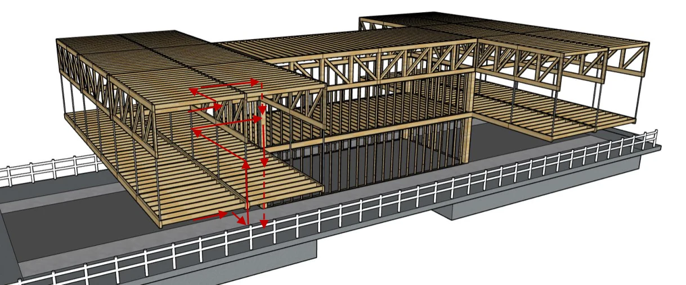
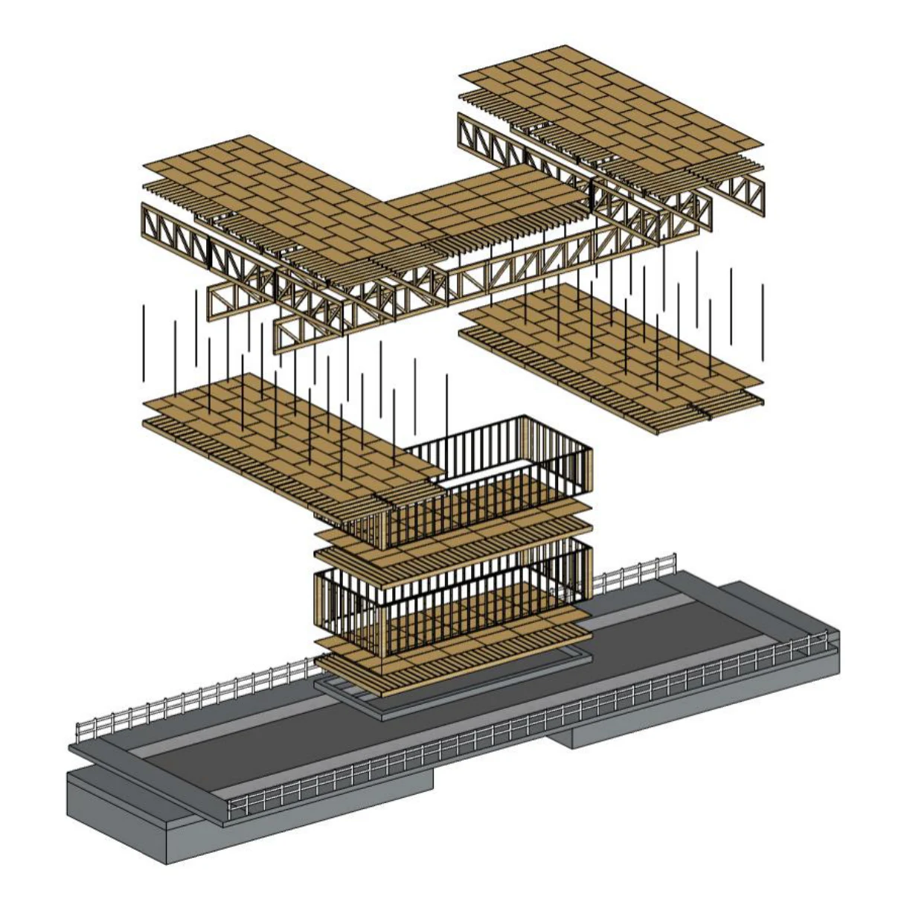

Licht bouwen.
Sterk verbinden.
Cycle bridge
7SDX0
Hoe wordt theorie bruikbaar wanneer de bestaande situatie je ontwerp bepaalt?
Het bachelor-eindproject onderzoekt een gebouw op een bestaande brug over de Dommel op de TU/e-campus. De combinatie van een tentoonstellingsruimte en café vraagt om een lichte constructie en een uitvoerbare bouwmethode.
Keuzes zichtbaar maken.
Mijn ontwerp begint bij de locatie en de bestaande brug. Na het vergelijken van drie concepten volgt een uitwerking van de materialisatie, krachtsafdracht, dimensionering en stabiliteit. Prefabricage en montage zijn onderdeel van het ontwerpproces.
Door de beperkte mogelijkheden om extra belasting op de brug aan te brengen, zijn licht bouwen en een heldere draagstructuur belangrijke uitgangspunten. In het verslag wordt de route van de belastingen via vloeren, dak en dragende elementen stap voor stap uitgewerkt.


Wat dit project laat zien.
Dit project verbindt het functionele ontwerp met mechanica, materiaalkeuze en uitvoering. Het is daarmee een bruikbaar voorbeeld om te laten zien hoe de kennis uit afzonderlijke vakken in één ontwerpopgave bij elkaar komt.
Van projectervaring naar uitleg.
Begin bij een leesbaar krachtsafdrachtsschema. Laat vervolgens zien hoe dat schema leidt tot een mechanisch model, belastingen en de eerste afmetingen van elementen.
Bekijk het interactieve concept →Het volledige verslag.
Bekijk de oorspronkelijke onderbouwing, berekeningen en tekeningen.